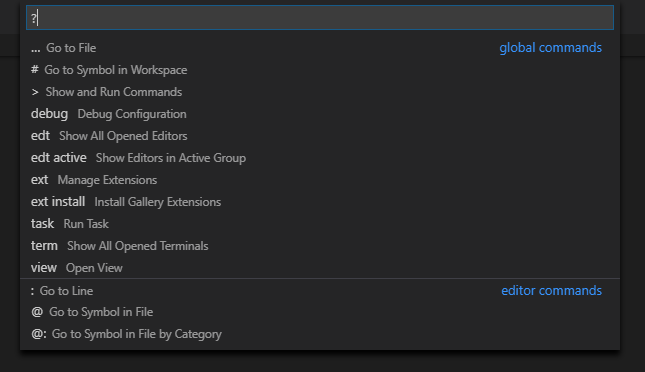
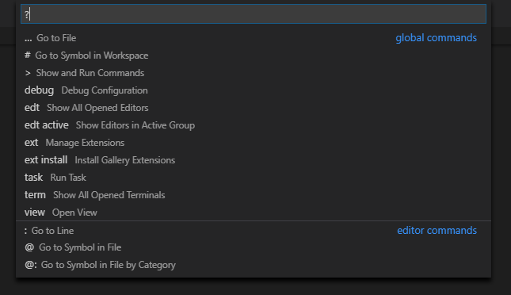Visual Studio Code. Настройка и применение. Часть 1
Первая часть глубоко субъективного гайда по VSCode.
Статья получилась объёмная, поэтому я решил разделить её на две части. Перейти ко 2-ой части можно по этой ссылке.
Некоторое время назад перешёл на редактор кода VSCode, и в ходе изучения у меня скопился набор общих подходов и настроек, которыми было бы полезно поделиться. В данной статье затронуты все аспекты, к которым я прибегаю в ходе своей рабочей практики. Выбор редактора и его настройка — вещь глубоко субъективная, поэтому и этот гайд я решил сделать таким же персонифицированным. Здесь нет призывов к действию, практически нет и общего описания функций редактора — за этим вы можете обратиться к официальной документации, кстати хорошо написанной. Я же здесь просто последовательно пройдусь по различным аспектам применения редактора и покажу, как лично я им пользуюсь. Если после прочтения раздела вам понравится описанный в нём подход, то вы можете делать также, если же у вас уже есть сформировавшееся видение на этот счёт, то просто посмотрите на иную точку зрения. Так что тут будет много “я”, но так и задумано 😉
Сразу оговорюсь, ввиду специальности описанный функционал будет подаваться под призмой frontend-разработки, хотя большая часть настроек имеет общий характер.
В вопросе пользования редакторов ранее я пользовался Sublime Text в его стандартной комплектации, т.к. он покорил меня своими функциями редактирования с множественным курсором, которые тогда были в новинку. Потом услышал про Brackets — он был заточен специально под frontend, в нём была возможность просмотра стилей блока прямо из разметки, так называемый “peek”, и поддерживался Live Reload. Однако он был гораздо медленнее и забагованее, чем Sublime, из-за чего на нагруженных рабочих проектах вкупе со слабым железом он стал неюзабелен. Так что после него я решил опробовать Atom — в принципе, приятный редактор, но пробыл на нём недолго по той же причине — он был быстрее, но всё равно периодически намертво зависал. Ну и в итоге я вернулся обратно на Sublime— он решил все вопросы со скоростью, и на этот раз я подверг его значительной кастомизации, и с десятком расширений он преобразился. С тех пор я был ярым сублаймщиком, пока не услышал про VSCode, который стали рекомендовать респектабельные разработчики из моей области на Западе, и в различных видеокурсах, где можно видеть редактор, я стал замечать в 95% VSCode. В общем, решил дать ему шанс.
Главное преимущество VSCode заключается в том, что он быстрый, как редакторы кода (быстрее только Sublime), но при этом функциональный, как полноценная IDE. Почему я никогда не пользовался IDE — потому что они тяжеловесные и в плане интерфейса сильно нагруженные. Это противоречит всем моим представлениям о работе фронтенда. VSCode же прост внешне, похож на кастомизированный Sublime, но при этом на другом уровне функциональности, специально заточен под фронтенд и постоянно развивается (разработчики ежемесячно выкатывают апдейт с новыми фишками) — чего ещё можно желать?
Так что давайте пройдёмся по различным аспектам этого редактора, посмотрим как получить профит от его сильных сторон, и как ещё улучшить его дефолтную конфигурацию.
В рамках 1-ой части мы рассмотрим следующие аспекты работы с редактором:
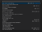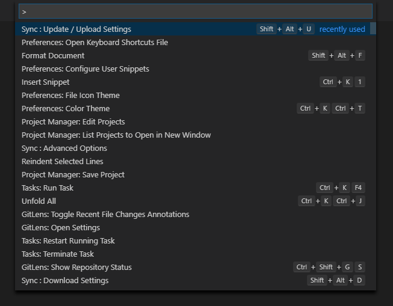
Палитра команд представляет собой командную строку с выводом списка наиболее актуальных команд
Первое с чего стоит начать — это палитра команд (Command Palette). Это основной интерфейс, через который вы можете выполнить любую команду, определённую в рамках вашего редактора. Если вы привыкнете ею пользоваться, то это сильно ускорит ваши рабочие процессы, т.к. не нужно запоминать какая команда вызывается через какое меню или за какой комбинацией горячих клавиш спрятана. К тому же управление через одну лишь клавиатуру всегда быстрее, чем в сочетании с мышью.
Ctrl + Shift + P — вызов палитры команд.
Как часто говорят, если вы хотите запомнить только одну комбинацию, запомните Ctrl + Shift + P. Это не специфика VSCode, так было и в Sublime. Если вы забыли как вызвать некоторую команду, то просто вызовите палитру и начните вводить релативные для команды слова, после чего автосаджест выведет вам подходящие результаты.
Лично я настолько к ней привык, что не пользуюсь классическим меню в верхнем левом углу экрана и не растрачиваю собственную оперативную память на запоминание местонахождения отдельных команд — просто Ctrl + Shif + P, начинаю вводить, что мне нужно, и стрелками докручиваю до нужной команды.
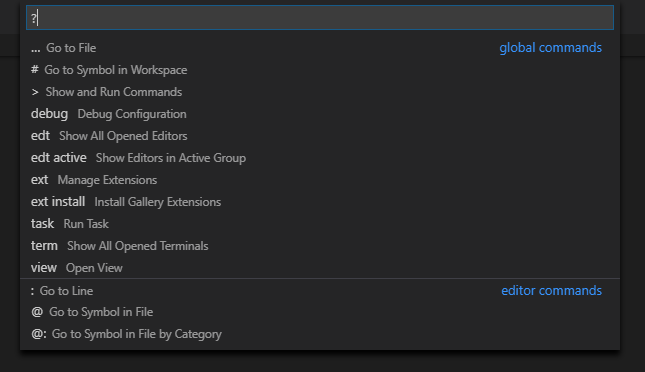
Через указание “?” можно посмотреть список флагов, меняющих назначение интерфейса палитры команд
В VSCode существует ряд комбинаций клавиш, которые вызывают тот же интерфейс, но с другим флагом в начале. Т.е. сама палитра идёт с флагом “>”, а могут быть и другие или вовсе не быть. Важно понимать, что это всё единый интерфейс, так что нет необходимости запоминать все эти комбинации, если вы не пользуетесь ими активно — достаточно запомнить одну комбинацию, этот интерфейс открывающую.
Ctrl + P — открытие командной строки без флагов.
Без флага интерфейс функционирует, как открытие файлов. При этом отображается подсказка, что можно ввести “?”, чтобы увидеть список флагов, которые можно прописать, и какой функционал этот ввод предоставит.
Лично я для набора команд пользуюсь комбинацией Ctrl + Shift + P, т.к. ей пользуешься максимально часто, и в конечном счёте, это быстрее, чем прожать Ctrl + P и ввести флаг “>”. Для всего остального же использую Ctrl + P, который откроет строку без флагов, и я смогу ввести нужный, или обратиться к справке, если вдруг запамятовал.
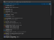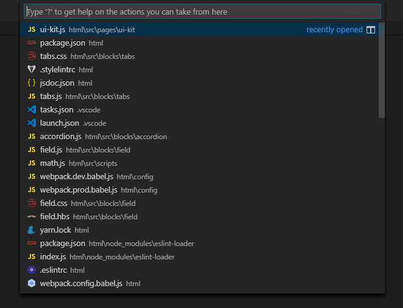
Без флагов интерфейс палитры команд функционирует как навигация по файлам
Теперь поговорим поподробнее о самих командах. Первое и главное — это конечно же сам быстрый переход по файлам.
Последнее время стараюсь отучить себя от переключения между файлами через проводник. Практика показывает, что через командную строку получается куда быстрее. К тому же экономится место экрана, т.к. не нужно держать панель управления постоянно открытой, да и вообще это круто 😎
Рядовой кейс: прописываешь стили, видишь переменную, далее, чтобы вспомнить, что она означает, заходишь в панель управления, ищешь среди кучи открытых директорий директорию со стилями и среди всех файлов скроллишь до variables.css — успех. Через командную строку: Ctrl + P, “var”, файл уже на верхней строчке списка автосаджеста, Enter — готово.
Также когда практиковался с подобной навигацией, пришёл к мысли, что часто бывает нужно открыть сразу несколько файлов, но с этим есть 2 проблемы: выбор на Enter закрывает командную строку и файл открывается в режиме на просмотр. Т.е. для выбора следующего файла нам нужно дважды кликнуть по табу открытого файла, чтобы он зафиксировался и не заменился при открытии следующего, после чего повторить последовательность выполненных операций. Оказалось, что всё это легко решается — просто нужно вместо Enter использовать стрелку вправо. Т.о., допустим, нам нужно открыть 3 файла: block.js, block.hbs и block.css. Прожимаем Ctrl + P, “block”, стрелка вправо, (стрелка вниз + стрелка вправо) x2 — получаем 3 файла, открытые на редактирование.
Остальными командами я пользуюсь редко. Самое полезное, что там есть — это навигация по символам файла (@), но с введением системы хлебных крошек (об этом далее) необходимость в этом исчезла. Поиск по символам рабочей директории (#) у меня работает криво, и для навигации по коду есть куда более удобные механизмы (о навигации также позже). Ну а переходу к строке файла (:) и вовсе сложно придумать применение кроме как в целях поддержки accessibility, к тому же он и так доступен из статус бара.
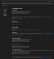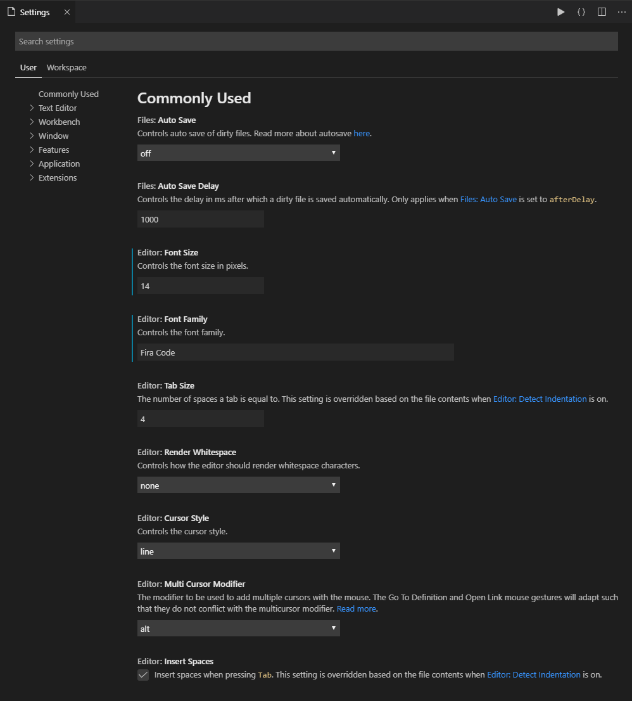
Настройки редактора в виде приятного пользовательского интерфейса, как альтернатива классическим JSON-конфигам
Начну с настроек, т.к. по сути всё, что здесь будет сказано, вертится вокруг них. Чем тщательнее вы настроите редактор под себя, тем комфортнее вам с ним будет работать в дальнейшем.
Настройки прописываются через json-файлы, но также доступен и пользовательский интерфейс (UI).
Ctrl + , — переход в окно настроек.
Я обычно пользуюсь UI, но периодически бывает нужно перейти непосредственно к json-файлам. Это можно сделать нажатием по кнопке Open settings (JSON) в верхнем правом углу. Также периодически будут встречаться настройки, задающиеся в свободном формате, которые определяются только через json — в таких случаях кнопка Edit in settings.json будет присутствовать прямо в настройках этого параметра.
При работе с JSON удобнее всего находить нужный параметр поиском по Default User Settings. После чего нажимаете кнопку Edit на полях и копируете данный параметр в список своих настроек. В случае с предопределённым списком возможных значений можно сразу выбрать нужное. Кроме того при ручном написании в User Settings Intellisense выведет список возможных значений в процессе набора.
⚠️ Ранее при редактировании настроек в формате JSON панель Default User Settings выводилась всегда в левом сплите. В новых версиях она отключена по умолчанию, но её можно активировать через настройку:
“workbench.settings.useSplitJSON”: true,
Теперь оговорюсь о ряде общих настроек, которые у меня прописаны, и могут быть вам также полезны.
По пробельным символам есть ряд правил, которые считаются общепринятыми. VSCode позволяет автоматизировать управление такими символами. Для этого пропишем ряд настроек:
“files.insertFinalNewline”: true,
“files.trimFinalNewlines”: true,
“files.trimTrailingWhitespace”: true,
Таким образом мы автоматизировали проставление пустой строки в конце файла, при этом убрали все пустые строки в конце кроме этой и удалили все пробельные символы на конце строк и на пустых строках. Теперь можно навсегда об этом забыть, всё будет причёсываться само по себе при сохранении файла.
Включаем перенос строк при достижения границ рабочей области экрана, чтобы не возникало горизонтальной прокрутки:
Убираем алерты с предупреждениями при удалении и перетаскивании файлов и директорий:
“explorer.confirmDelete”: false,
“explorer.confirmDragAndDrop”: false,
После того, как настройки заданы, вы думаете: “Вот другое дело, теперь заживём! Только нужно не забыть ещё и на офисном компе это повторить. Отмечу себе.”. И действительно, что если вы параллельно работаете на домашней стационарной ЭВМ, на офисном компьютере и рабочем ноутбуке? Нужно по 3 раза проделывать одну и ту же работу? Кроме того, что это тратит ваше время, рано или поздно это приведёт к различиям между настройками на различных устройствах. К счастью, для решения этой проблемы был создан плагин Settings Sync.
Settings Sync
Данный плагин позволяет создать единый хаб для ваших настроек. После того, как на одной машине были прописаны новые настройки, жмёте Upload settings, а при начале работы на других устройствах прожимаете Download settings. Быстро, просто, и ваши настройки всегда синхронизированы. При этом синхронизируются не только стандартные файлы с настройками, но и список установленных расширений, настройки рабочих директорий (папка .vscode в корне проекта), сниппеты, горячие клавиши — в общем, всё, что может быть синхронизировано.
Пошаговая инструкция по первоначальной настройке синхронизации приведена на странице плагина, так что не буду повторяться. В общих словах, нужно создать новый access token на Github и загрузить настройки, после чего система выдаст вам Gist ID, который нужно будет указать при скачивании настроек с другого устройства. Если что, этот ID сохраняется в User Settings, где его всегда можно посмотреть.
По умолчанию настройки приватные, но можно создать и публичную версию. Так можно задать корпоративные настройки, которые новоприбывшие сотрудники при настройке рабочего места при желании, если хотят пользоваться VSCode, могут себе загрузить в качестве быстрого старта, а потом уже изменять под свои нужды. При этом эти публичные настройки доступны только на чтение, так что никто кроме вас, их изменить не сможет.
Касательно загрузки / отгрузки настроек, я это делаю через палитру команд: Sync: Update / Upload Settings и Sync: Download Settings. Имеется возможность автоматизировать эти процессы, проставив соответствующие флаги в настройках, но по мне это избыточно, т.к. делается не так уж и часто, а подобная автоматизация увеличивает общее время загрузки редактора.
☝️ При работе с Settings Sync есть довольно неочевидный момент: как не синхронизировать ряд настроек из списка? Допустим, у меня дома стоит геймерский 2K-монитор и на нём шрифт в 14px смотрится хорошо, но на небольшом рабочем ноуте 13px будет в самый раз. На самом деле всё очень просто (после того как убьёшь порядком времени на поиск решения) — такие настройки нужно предварять директивой sync-ignore:
//@sync-ignore
"editor.fontSize": 14,
//@sync-ignore
"terminal.integrated.fontSize": 14,
//@sync-ignore
"markdown.preview.fontSize": 14,
Управление рабочим пространством
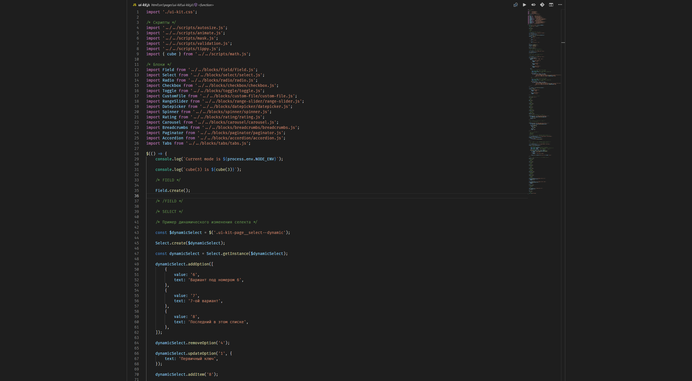
Интерфейс редактора в режиме Zen Mode — минимум отвлекающих факторов, только вы и код.
Всегда хотелось бы выделять под окно редактора максимально возможное пространство. Это в принципе всегда хорошо, но порой бывает критично — например, на небольшом мониторе ноутбука, или на обычном мониторе, когда по совместительству открыт браузер.
Самое явное, что здесь можно сделать — это отказаться от панели управления. Если вы привыкнете к палитре команд, то панель вы будете разворачивать только в ряде частных случаев, а потом продолжите работать внутри.
Ctrl + B — переключение видимости панели управления.
Держать снизу панель открытой также не нужно. Terminal при работе с кодом не нужен, Debug Console нужна только при отладке, Output и Problems также открываются лишь периодически.
Ctrl + ` — переключение видимости терминала.
Если нужно выиграть пространство, то подойдёт также переход в фулскрин. Это откроет редактор на весь экран и спрячет верхнюю строку меню, которая и так не нужна. Я обычно этой функцией не пользуюсь, но если, допустим, показываешь презентацию с ноутбука с увеличенным шрифтом, то бывает полезно.
Тогда сразу оговорюсь о зуме. Чтобы он работал на колёсико мыши, нужно активировать его в настройках:
“editor.mouseWheelZoom”: true,
После этого зум станет доступен через привычные:
Ctrl + (Mouse wheel) — переключение масштаба.
Ну и последнее, Zen Mode. Если вы хотите абстрагироваться от всего кроме кода, убрать все отвлекающие факторы, то включайте этот режим. Он оставит только центрированное окно редактора и ничего более. Я включаю его периодически вечерами, когда концентрация уже понижена, ну или когда просто усердно работаю с некоторым фрагментом кода, и больше не хочу ничего видеть. Для переключения между файлами вам здесь уже придётся пользоваться Ctrl + P. Ну а чтобы выйти просто нажмите Esc.
Порой на загруженных файлах бывает желание свернуть все группы. Чтобы не делать это вручную, можно свернуть сразу все. Это можно сделать через команду Fold All или через комбинацию:
Ctrl + K Ctrl + 0 — сворачивание всех раскрываемых блоков.
После того, как разберётесь со структурой, возвращаем всё обратно аналогично через Unfold All или через комбинацию:
Ctrl + K Ctrl + J — раскрытие всех раскрываемых блоков.
С добавлением хлебных крошек в этом стало меньше смысла, но стоит указать, что такая возможность имеется, т.к. изредка я ей всё-таки пользуюсь.

Синхронное добавление модификаторов элементам списка через множественный курсор
Теперь сконцентрируемся на главной функции редактора кода — непосредственно написании кода. В VSCode присутствует ряд возможностей для упрощения этого процесса.
Emmet встроен в VSCode, его можно увидеть в списке плагинов в категории Built-in Extensions. Если кто не пользовался им ранее, то это инструмент, позволяющий упростить написание разметки. Можно сказать, что это сниппеты для HTML, только с возможностью чейнинга. Например можно написать:
<ul class=”list”>
<li class=”list__item”>Item 1</li>
<li class=”list__item”>Item 2</li>
<li class=”list__item”>Item 3</li>
<li class=”list__item”>Item 4</li>
<li class=”list__item”>Item 5</li>
</ul>
Если вы знаете как пишутся CSS-селекторы, то с написанием сокращений под Emmet у вас не возникнет проблем. В данном примере к специфике Emmet относится только знак “*”, повторяющий блок указанное число раз, “$”, вставляющий счётчик, и опускание “li”, т.к. Emmet понимает это из контекста.
Если говорить об общих рекомендациях по применению, то я не советую использовать Emmet для блоков кода сложнее этого, т.к. на практике, допустим, для таблицы проще и быстрее написать thead, развернуть получившийся блок, после чего отдельно прописать tbody. Нет смысла писать всю таблицу одной строкой, т.к. вы начинаете тратить время на продумывание того, как это написать на Emmet, что противоречит изначальному смыслу его применения. Как следствие, я не использую оператор возвращения на предыдущий уровень “^” и очень редко использую оператор соседства “+”, т.к. в этих случаях проще развернуть то, что есть, и, не заморачиваясь, написать следующую часть с нуля.
Emmet также можно использовать с CSS, но лично я им при написании стилей не пользуюсь, т.к. мне хватает автосаджеста. К тому же нужно запоминать сокращения в отличие от HTML, где построение сокращений естественно, т.к. выводится из CSS-селекторов. Хотя я знаю, что некоторые разработчики находят эту возможность полезной. Так что для протокола пример применения в CSS:
P.S. Кстати, не используйте !important 💩
VSCode поддерживает всю ту магию с множественным курсором, которой когда-то покорил меня Sublime Text. Вообще говоря, множественные курсоры проставляются на Alt + Click, но я этим не пользуюсь. Приведу примеры более практичного применения этой возможности.
Если нужно внести идентичные правки в нескольких местах файла, то разумно выделить сразу все эти места и изменять их параллельно. Для этого выделяем первое вхождение и через Ctrl + D выделяем последующие.
Ctrl + D — выбор следующего вхождения.
Ctrl + F2 — выбор всех вхождений.
Однако, если цель — заменить имя цельной сущности в js, то лучше отдать предпочтение переименованию на F2 — она умнее, чем обычная текстовая замена, и как раз предназначена для таких целей (подробнее о символьных манипуляциях в следующей главе). Также замену можно произвести через Ctrl + H (про текстовый поиск опять же поговорим в следующей главе), но когда применяешь Ctrl + D цель всё-таки несколько другая — расположить множественные курсоры, чтобы параллельно изменять код в нескольких местах.
Пример применения: есть JSON-файл с тысячей вхождений поля “order” с различными значениями. Мы сочли, что такое поле нам больше не нужно. Соответственно, выделяем “”order”:”, Ctrl + F2, курсор проставляется в 1000 строк, End — переходим в конец выделенных строк, Shift + Home — выделяем строку, Backspace — стираем выделенный текст, Backspace — убираем пустые строки. Без множественного курсора мы бы провозились с этими правками довольно долго, а теперь же, расправившись с этой задачей like a boss, можем спокойно пойти выпить чая 😎
Бывает, что у нас есть несколько идентичных строк, идущих подряд, и нам нужно в каждую из них дописать что-то ещё. Для этой цели подойдёт колоночное выделение:
Alt + Shift + (Drag mouse) — колоночное выделение.
С помощью колоночного выделения можно, например, перевести разбитые на отдельные строки 10 значений в единую строку — для этого выделяем начало всех нужных строк и прожимаем Backspace и “, “. Теперь значения идут одно за другим в одну строку через запятую.
В отдельную группу выделю управление строками через Alt и стрелки. Здесь всего 2 комбинации, которые стоит запомнить.
Нажатие стрелок с зажатым Alt перемещает строку. Порой бывает удобно перенести выделенный участок, не переключаясь на мышь. По сути то же самое, что выделить блок мышью, и прожать Ctrl + X Ctrl + V, только быстрее, если привыкнуть. Если нужно перенести только одну строку, то выделять ничего не нужно, достаточно стоящего на строке курсора.
Alt + Arrow — перемещение строки.
Если повторить ту же комбинацию с зажатым Shift, строка вместо перемещения начнёт копироваться. Допустим, у вас есть некоторая строка и вам нужно размножить её до 20 вхождений, чтобы иметь базу, в которой вы будете потом вручную изменять отдельные фрагменты. Это можно сделать, выделив строку, нажав Ctrl + C, и ещё 19 раз прожав Enter и Ctrl + V. Создаёт видимость работы, конечно, но то же самое можно сделать, зажав Shift + Alt и стрелку вниз, и отпустив стрелку, когда строк станет достаточно. Вы можете возразить, что можно скопировать строку сразу с переносом, а Ctrl + V просто зажать. Ну вообще можно, да, и это уже похоже по трудозатратам на то, что мы делаем через Alt. Просто раньше я замечал за собой именно первый вариант, так что, полагаю, что он достаточно распространён.
Shift + Alt + Arrow — копирование строки.
Как и все уважающие себя редакторы, VSCode позволяет закомментировать выделенные строки через горячую клавишу:
Ctrl + / — вставка строчного комментария.
Тип комментариев подбирается на основании языка. Для js будет применён //, для css /* */, для html <!-- -->, для hbs {{!-- --}} и т.д. Для написания стилей я пользуюсь PostCSS, и здесь важно, что для при этом комментарии определяются верно. В Sublime Text я ставил ассоциацию .pcss файлов c SCSS, в результате чего подсветка синтаксиса была примерно корректная, но комментарий вставлялся, как в SASS одинарный, что для PostCSS вызывало ошибку, т.к. в CSS должны быть блочные комментарии.
Лично я придерживаюсь такого стиля написания комментариев в скриптах, что выделение участка кода, который временно отключён, идёт через //, временные пометки в конце строк также идут через //, но пояснения пишутся через блочные комментарии /* */ на отдельных строках. Так можно визуально отделить “work in progress” участки кода, которые потом можно будет удалить, от вшитых сопровождающих пояснений работы блока, да и смотрятся блочные комментарии более аккуратно. Для вставки блочного комментария в VSCode предназначен шорткат:
Shift + Alt + A — вставка блочного комментария.
Для этого сначала прожимаем комбинацию, курсор сразу оказывается внутри комментария и вписываем внутрь нужный комментарий. Также можно пойти от обратного и сначала прописать текст комментария, потом выделить написанный текст и прожать комбинацию. В отличие от строчных комментариев здесь нужно уже выделить полную область. Со строчными можно ничего не выделять, если речь идёт об одной строке, либо небрежно затронуть нужные строки для многострочного комментирования.
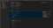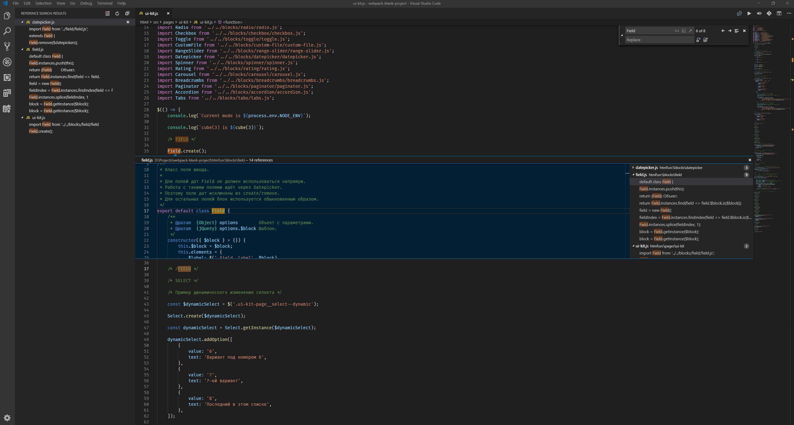
VSCode с активированной панелью вывода превью всех вхождений символа, вкладкой с перечислением всех вхождений на панели управления и блоком текстового поиска по файлу
Важной частью любого редактора является его возможность навигации по файлу и проекту. Рассмотрим, что предлагает VSCode.
В плане текстового поиска всё стандартно: есть локальный поиск по файлу и глобальный по всему проекту.
За поиск и замену отвечает единый интерфейс, в нём доступен ввод регулярных выражений и учёт регистра.
Глобальному поиску предоставлена отдельная вкладка на панели управления. Интерфейс предоставляет всё то же самое, что и поиск по файлам, только кроме этого можно указать файлы для включения и исключения из поиска. Зачастую у меня там прописано “src” для общего поиска по исходникам, либо “src/**/*.js” для поиска только по нужному расширению.
Ctrl + Shift + F — поиск по проекту.
Ctrl + Shift + H — замена по проекту.
А вот теперь начинается самое интересное. VSCode поддерживает не только стандартный поиск по тексту, но и более интеллектуальный поиск по символам. Т.е. ваш код анализируется и редактор пытается предположить, что конкретно вы ищете (и обычно ему это удаётся). Если вы привыкнете к такому подходу к поиску, то ваша продуктивность значительно вырастет. Рассмотрим основные случаи, когда нужен поиск, и какое решение для таких типовых кейсов предлагает нам VSCode.
Распространённая причина поиска по проекту — мы встречаем некоторую сущность и хотим понять, что она из себя представляет, т.е. перейти к её определению.
VSCode делает все основные сущности ссылками, так что имеется возможность перейти к определению, как и по любой другой ссылке, зажав Ctrl и кликнув по символу. В результате нас перекинет к определению данного символа в проекте, будь это тот же файл или другой конец рабочей директории. То же самое можно сделать, просто нажав F12:
Весь функционал поиска завязан на комбинациях вокруг F12, но все эти команды также можно вызвать через контекстное меню правой кнопкой мыши (ПКМ).
Также есть возможность посмотреть определение, не покидая текущий файл — это так называемый “peek” функционал, который широко используется в Brackets.
Alt + F12 — превью определения.
Кстати, у меня была проблема с использованием этого шортката — он просто не срабатывал, хотя через контекстное меню команда выполнялась. Оказалось, что всё дело в Geforce Experience. Имейте в виду, если он у вас установлен, что его комбинация перекрывает эту, и чтобы это исправить, нужно переключить команду отображения FPS на другое сочетание клавиш.
Другая причина применения поиска — это попытка найти все вхождения некоторого символа. Допустим, мы изменяем функционал в одном месте, но хотим быть уверены, что остальная часть проекта при этом не развалится.
Для таких случаев VSCode предоставляет поиск по вхождениям, который также может вывести результат в виде превью, так и с недавних пор в отдельной вкладке панели управления.
Shift + F12 —вывод все вхождений в виде превью.
Shift + Alt + F12 —вывод все вхождений на панели управления.
Преимущество такого поиска над текстовым в том, что это реально та единица, которую вы ищете, а не что-либо с похожим именем. Если вы используете модульную структуру, то ваша область видимости ограничена отдельными файлами, так что зачастую одни и те же имена применяются в различных файлах для описания схожего функционала. В таком случае текстовый поиск выдаст вам длинный список результатов, а с символьным поиском, вы получите только нужный.
Как развитие предыдущего кейса — это поиск вхождений с целью изменить имя сущности на всём проекте.
Для этой цели имеется более удобный функционал. Переименовать символ можно, нажав клавишу F2, как это делается с файлами. Подобная смена имени поменяет его во всех местах проекта, где он используется, а не только в конкретном месте, как было бы для обычного текста.
И последнее, о чём нужно поговорить на тему навигации — это механизм хлебных крошек.
Для начала их нужно включить, т.к. по умолчанию они выключены:
После активации вверху окна редактора появится строка с адресом, совмещающим нахождение файла в проекте и положение вашего курсора относительно символов файла. Первое — это классическое понимание хлебных крошек. Полезно, если у вас закрыт проводник и вам нужно сориентироваться в какой части проекта вы находитесь. Но второе делает хлебные крошки куда универсальнее. Например, если вы находитесь внутри метода класса, то в адресе после имени файла будет фигурировать имя класса и текущего метода. Такой механизм крайне полезен сразу по ряду причин: понимание позиционирования в рамках файла, понимание структуры файла, предоставление быстрой навигации по файлу.
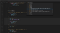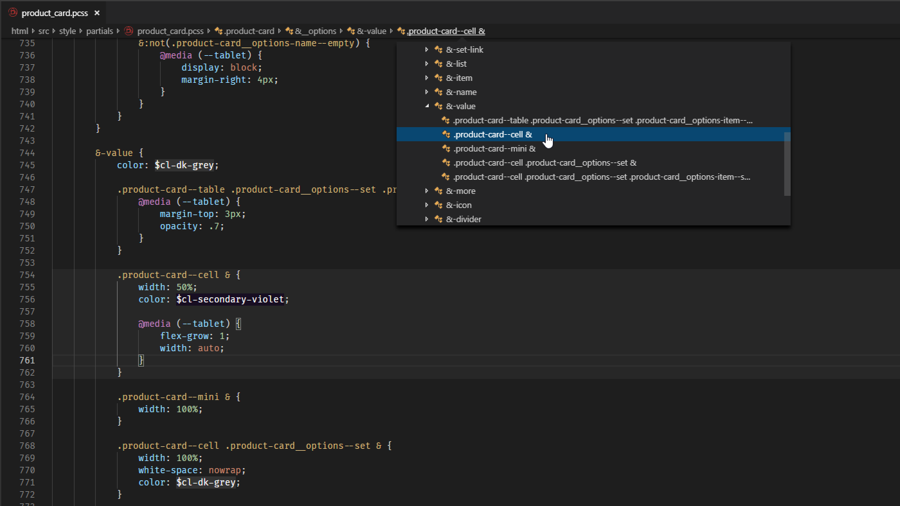
Пример тяжёлого для восприятия CSS-файла с высоким уровнем вложенности. Механизм хлебных крошек приходится здесь как никогда кстати
Представим типовой случай: у нас есть комплексный блок вроде карточки товара, мы правим его стили. Блок построен по БЭМ, у него куча разных модификаторов и вложенностей, для написания которых используется PostCSS с SCSS-подобным синтаксисом нестинга через &. Суммарно файл насчитывает свыше 1000 строк, мы на 758-ой. Мы видим на экране только &-value и что идёт переопределение стилей для модификатора cell, и хотим узнать что именно мы сейчас правим. Как это сделать? Обычно нужно скроллить наверх до предыдущего вложения, пока не дойдём до корня. С хлебными крошками мы просто смотрим на адресную строку и видим “product-card > __options > -value > .product-card — cell &”, и картина сразу складывается. Кстати для селекторов есть ещё один наглядный механизм определения конечной структуры — просто наведите курсор на текущий селектор, и увидите общую картину.
Далее, допустим мы поняли что именно мы правим, но хотим понять, общую структуру файла, чтобы лучше в нём ориентироваться. Для этого нам пришлось бы проходить по всем первым вложениям и сворачивать их (либо свернуть всё, а потом разбираться). С хлебными крошками мы просто кликаем по имени блока — в данном случае .product-card и видим цельную картину со всеми вложениями, которые можно раскрыть и посмотреть, что там внутри. Сам файл мы при этом не изменяем. Ну а для навигации по файлу нужно просто кликнуть в этом представлении по нужной сущности, и вас перекинет на неё. По сути это то же самое, что предоставляет палитра команд с флагом “@”, только удобнее.
В целом, 2 вещи, которые вам нужно запомнить: первое — если потерялись в файле, то просто смотрите на крошки и видите конечный путь, второе — если нужно перейти к другой сущности в файле, то жмёте по родительской сущности в крошках, видите общую структуру, выбираете нужное. Я уже привык управляться так с тяжёлыми файлами, и после этого стал тратить меньше времени на поиск в них чего-либо.
Ту же самую структуру, кстати, можно посмотреть через вкладку Outline проводника на панели управления.
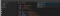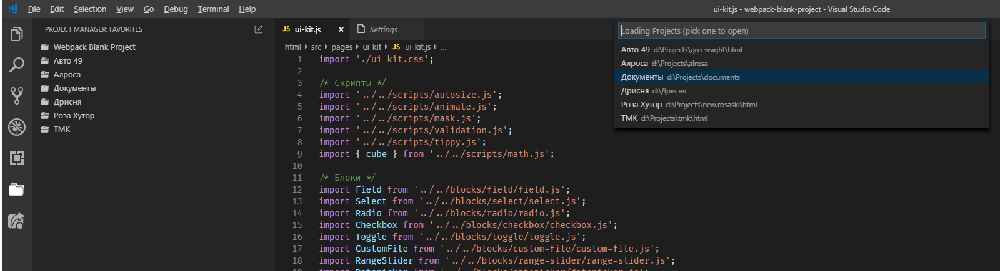
Навигация по сохранённым проектам через вкладку панели управления и через командную строку, вызываемую из статус бара
Из коробки VSCode не предоставляет привычной системы работы с проектами, когда можно открывать не абстрактные папки, а единые сущности, имея постоянный доступ к их списку с быстрым переключением между ними. Имеется только достаточно мутная система воркспейсов. Так что сразу перейду к подходу, который я использую в работе. Он завязан вокруг использования плагина Project Manager.
Project Manager
Данный плагин предоставляет все те возможности, описанные выше, которых так не хватает в базовой комплектации. Логика следующая: при первичном развороте проекта мы открываем его корневую директорию через стандартный Open Folder. После чего мы сохраняем эту абстрактную папку, как проект: в палитре команд Project Manager: Save Project, даём проекту понятное имя, и проект добавляется в новую вкладку Project Manager панели управления.
Теперь мы имеем наглядное представление списка проектов и одним кликом можем перейти к нужному. Клик по проекту открывает его в текущем окне, а через контекстное меню, вызываемое через ПКМ, можно открыть его в новом окне.
Кроме того имя проекта дублируется в статус баре, так что вы всегда знаете в каком проекте сейчас находитесь. Клик по имени вызывает список проектов и по нему также можно переключиться на нужный — это даже быстрее, чем через панель управления.
В принципе, если вы ратуете за минимализм, то вкладку из панели управления можно совсем убрать — переключаться через нижний бар, а редактировать проекты через командную строку: Project Manager: Edit Projects. Эта команда откроет файл projects.json, где можно актуализировать список проектов. Лично я так и сделал. Для удаления вкладки из панели управления прописываем:
“projectManager.treeview.visible”: false,
Единственное, что может останавливать от такого подхода — это то, что выбор проекта из бара всегда открывает его в текущем окне, а в большинстве случаев хотелось бы открывать проект в новом окне. Этот момент легко правится через задание следующей настройки:
“projectManager.openInNewWindowWhenClickingInStatusBar”: true,
Зачастую разные проекты строятся на различных стеках технологий и требуют своего подхода, а значит и своих специфичных настроек. Такие настройки прописываются внутри папки .vscode, в корневой директории вашего проекта. Эта папка создаётся автоматически, когда вы меняете что-либо на уровне проекта. Это могут быть уже упомянутые ранее Workspace Settings (settings.json), настройки отдельных языков (jsconfig.json), настройки отладки (launch.json), список доступных тасков (tasks.json) и т.д.
Не забудьте прописать эту директорию в .gitignore.
Ввиду специфики моей профессиональной деятельности работа идёт не на уровне всего проекта, а только в отдельностоящем уютном фронтендерском уголке. То есть рабочая директория не совпадает с корневой, на уровне которой был сохранён проект. Это вызывает неудобство при работе с терминалом, т.к. если вы попытаетесь запустить, к примеру, сборщик из корня, то ничего хорошего из этого не выйдет, ведь конфиг запуска лежит в рабочей директории. Т.о. каждый раз при запуске проекта нужно переходить к себе через команду cd, что со временем начинает напрягать.
К счастью, у нас есть возможность определить рабочую директорию проекта. Это как раз та настройка, которую нужно задавать не глобально, а на уровне воркспейса, т.к. в разных проектах местоположение рабочей директории может варьироваться. Например, если относительно корня, вы работаете в директории html, то задаётся это следующим образом:
“terminal.integrated.cwd”: “html”
Конечно, как вариант, можно определять проекты сразу на уровне рабочей директории, но я этого делать не советую, т.к. периодически бывает нужно покинуть свой ламповый уголок, и поменять что-то извне, либо запустить поиск сразу по всему проекту. При таком подходе вам придётся открывать отдельное окно с папкой всего проекта, либо отдельно хранить 2 версии проекта — рабочий и общий, что крайне неудобно.
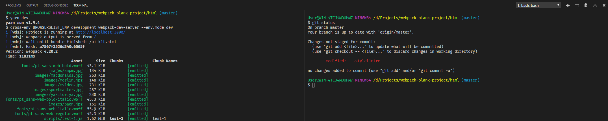
bash встроен в VSCode. Слева запущен сборщик, а справа вводятся команды.
VSCode имеет встроенный терминал, так что вам больше не понадобятся сторонние приложения для работы с терминалом. Ранее я пользовался ConEmu, теперь же полностью от него отказался. Засчёт того, что терминал встроен в редактор, уменьшается переключение контекста, что увеличивает вашу производительность. Это касается не только терминала, но и любого внешнего инструмента, который мы можем интегрировать прямо в редактор. Дебаггер — также отличный пример.
Терминал доступен из нижней панели. Интересный способ открытия этой панели — это “вытаскивание” её из нижнего бара. Просто попробуйте потащить бар вверх 😱 Но вообще обычно я использую комбинацию Ctrl + `.
Далее нужно настроить какой терминал вы хотите там видеть. Я использую Git Bash. Для этого указываем его местоположение:
“terminal.integrated.shell.windows”: “C:\\Program Files\\Git\\bin\\bash.exe”,
Также по настройкам я отключил у себя звуковое сопровождение:
“terminal.integrated.enableBell”: true,
Имеется возможность добавлять любое количество терминалов. На практике обычно я использую 2 терминала — в одном запущен сборщик, а через второй набиваются нужные команды. При этом удобно разделить терминал на 2 части. Хотя в принципе можно обходиться одним рабочим терминалом, если пользоваться механизмом тасков (об этом далее).
Ctrl + \ — Добавление нового терминала в той же вкладке.
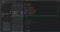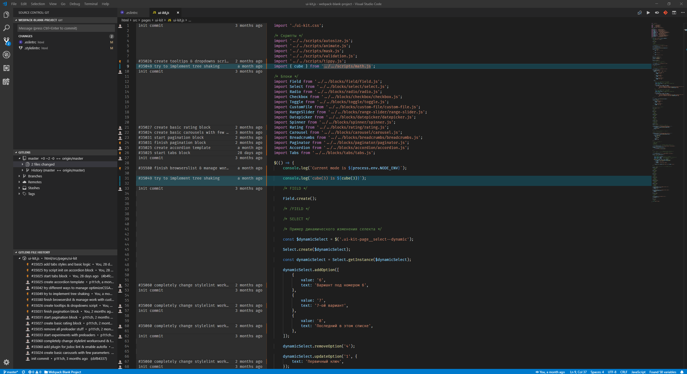
Процесс навигации по истории коммитов с расширением GitLens.
VSCode предоставляет интерфейс для работы с системой контроля версий. Этот функционал представлен на вкладке Source Control панели управления и частично в статус баре. На вкладке Source Control выводится список изменённых файлов и имеется поле ввода заголовка коммита. В статус баре указывается текущая ветка и количество несинхронизированных коммитов.
До перехода на VSCode я всегда работал с Git через терминал, но теперь перешёл к управлению через интерфейс, т.к. при таком подходе удаётся тратить на это меньше времени, да и если редактор предоставляет такие возможности, то почему бы ими не пользоваться. Я пользуюсь самыми базовыми командами — рассмотрим их реализации в рамках интерфейса по порядку.
Собственно, это все команды, которые я ранее вводил вручную. Как можно видеть для всех них есть более удобные альтернативы, сводящие работу с Гитом к паре кликов. Расширенный набор команд доступен по кнопке “More Actions…” (иконка “…”) наверху вкладки Source Control, ну и для уникальных сложных случаев всегда доступен терминал.
Кстати, если интересно, какие команды VSCode исполняет под капотом, то их можно увидеть на панели Output, выбрав в качестве источника Git.
Что касается мержа, файлы с конфликтующими изменениями отображаются в группе “Merged Changes”. По этим файлам можно пройтись и решить конфликты через встроенный в код линзы (Code Lens). Они предоставлены в виде кнопок, которые позволяют принять отдельные изменения, либо объединить все. При выборе изменённых файлов в панели Source Control открывается diff, показывающий файл из последнего коммита и текущий файл слева и справа соответственно.
Также отмечу, что VSCode из коробки предоставляет индикаторы на полях, символизирующие изменения по сравнению с последним коммитом (зелёный — новый, синий — изменённый, красный — удалённый). В Sublime Text этот функционал приходилось добавлять через специальный плагин.
После всего сказанного единственное, чего здесь не хватает — это интерфейса для просмотра истории коммитов и поиска авторов отдельных фрагментов. Этот функционал добавляется расширением, о котором и пойдёт речь далее.
GitLens — Git supercharged
GitLens — это многофункциональное расширение, предоставляющее возможности по отслеживанию истории изменений. Оно настолько крупное, что идёт со своим интерфейсом настроек, который можно вызвать через палитру команд. Так что если будете настраивать, то пользуйтесь этим интерфейсом — оттуда убран ряд заумных внутренних команд, которые при необходимости можно найти в основных настройках редактора. Расширение разбито на отдельные группы функционала — пройдёмся по ним:
Я описал основные функции расширения, а что уже из этого использовать, а что нет — дело ваше. Мою сборку для работы с историей коммитов можно видеть на скриншоте наверху раздела — там активирован режим Gutter Blame и открыта вкладка Source Control, на которой можно видеть GitLens Explorer и Gitlens File History Explorer. Также в статус баре можно видеть индикатор Status Bar Blame и сверху справа рядом с горящей кнопкой, активирующей Gutter Blame, кнопку, запускающую Comparison Tools. Остальные перечисленные функции отключены.
В итоге все мои настройки этого расширения сводятся к приведению редактора к минималистичному виду — отключения всех визуальных фич и перемещение всех проводников в меню Source Control. Для себя я нахожу все эти линзы и ховеры бесполезными и вместо этого включаю аннотации всего файла при необходимости. Если вам нравится этот функционал, то предложу настроить modes, чтобы они выводились в review-режиме, но не мешались при разработке. Перемещение же всех проводников в дефолтную вкладку позволяет держать всю работу с Гитом на одной панели, что полностью убирает дополнительную вкладку из интерфейса и на практике повышает частоту пользования все данным функционалом и упрощает работу в целом.
“gitlens.codeLens.enabled”: false,
“gitlens.currentLine.enabled”: false,
“gitlens.hovers.enabled”: false,
“gitlens.mode.statusBar.enabled”: false,
“gitlens.gitExplorer.location”: “scm”,
“gitlens.historyExplorer.location”: “scm”,
“gitlens.resultsExplorer.location”: “scm”,
?? 🔥 🔥 Поздравляю! Вы дочитали первую часть статьи (или проскролили до футера). Здесь мы рассмотрели базовые возможности VSCode и различные подходы в его применении, а также прописали ряд полезных настроек. Но самое интересное ещё впереди: дебаг и линтинг на уровне редактора, упрощение работы через механизмы тасков и автосаджест Intellisense, список полезных расширений и многое другое. Чтобы продолжить чтение, просто перейдите по этой ссылке.
Если вам есть, что сказать, то оставляйте комментарии. Любой фидбек — это приятно 😌